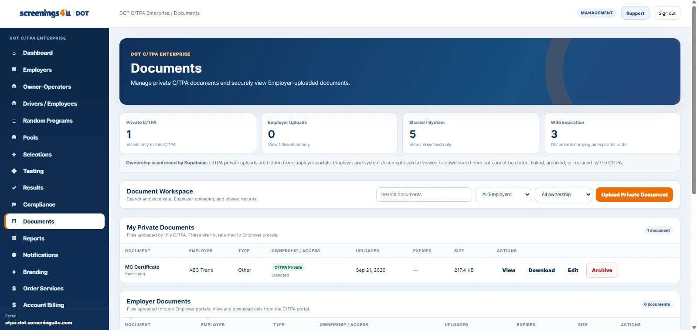

This article focuses on how to organize the work inside a DOT program. It is operational guidance for using a structured workforce and compliance system; it is not a substitute for the rules or official agency guidance that apply to your organization.
Give every document a purpose
A document is more useful when it is linked to the worker, program, testing order, compliance case, or employer record it supports. Context is what turns a file into an operational record.
Use consistent document types
Standard document types make filtering and reporting more reliable. Policies, acknowledgements, credentials, training records, test records, and compliance documents should be categorized consistently across the organization.
Track dates that matter
Upload date is only one date. Expiration dates, effective dates, retention dates, and renewal dates may also matter operationally. Surfacing those dates helps teams act before a record becomes stale.
Separate sensitive access where needed
Not every user should see every document. Role-based access and restricted document categories help keep sensitive records available to the people who need them without making the entire document library universally visible.
Build reports from structured records
Reporting is stronger when the underlying records are structured. Instead of relying on a folder full of PDFs, teams can report on workforce status, testing activity, open compliance items, document expirations, and other operational metrics.